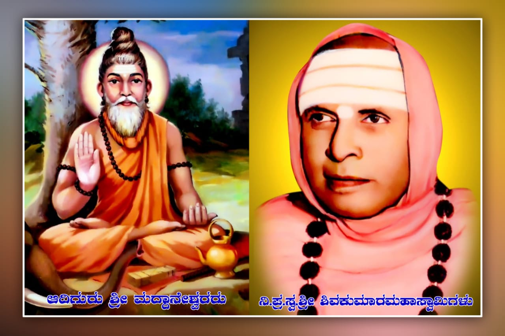
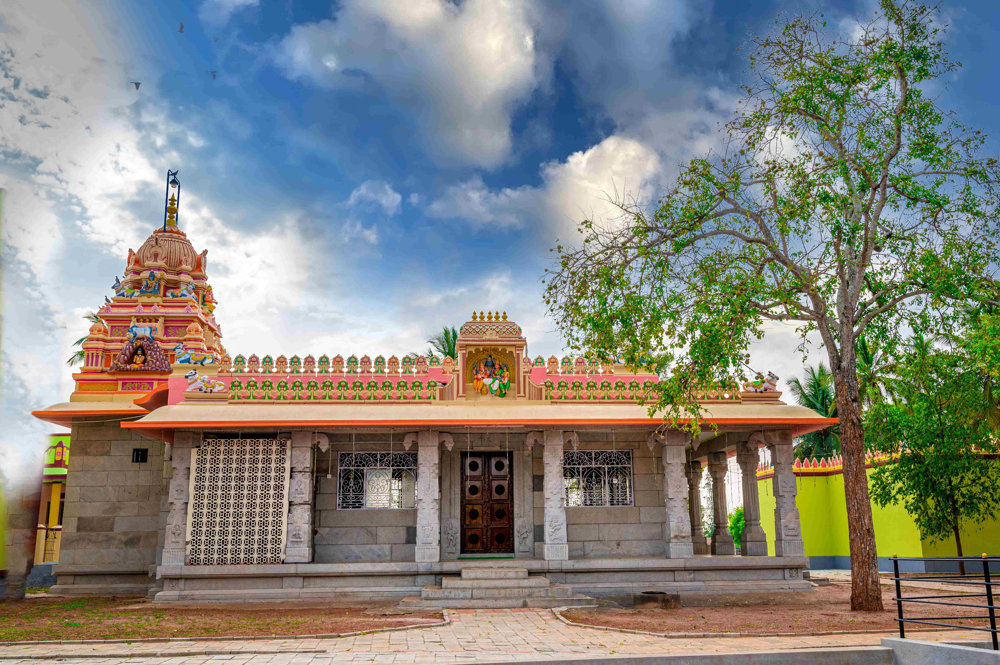
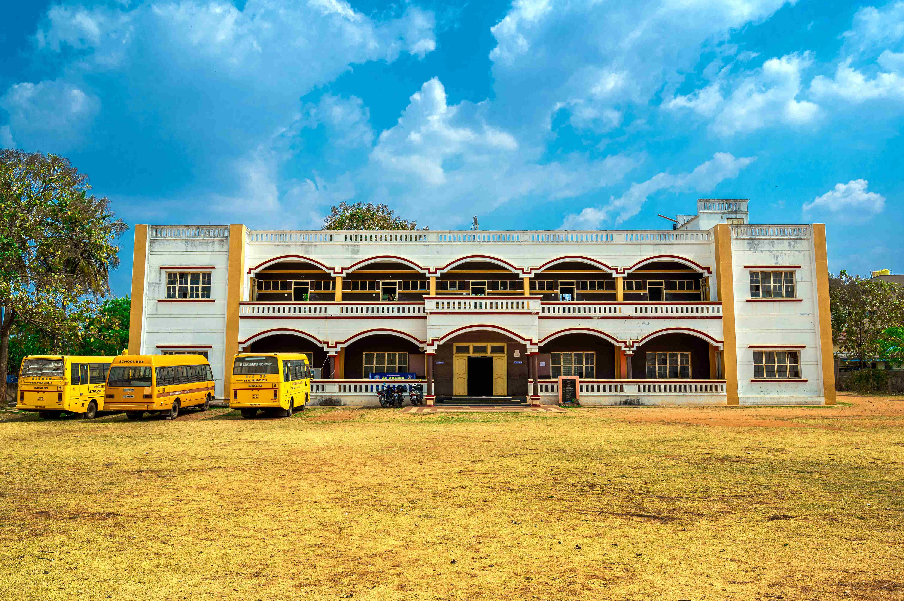
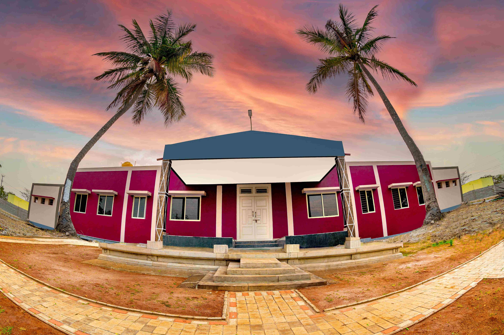

ಶ್ರೀ ಮಠದ ಐತಿಹಾಸಿಕ ಪರಿಚಯ Historical Profile of Sri Matha
ಚಾಮರಾಜನಗರ ಜಿಲ್ಲೆ ಗುಂಡ್ಲುಪೇಟೆ ತಾಲ್ಲೂಕಿನ ಪ್ರಕೃತಿ ರಮಣೀಯ ಪಡುಗೂರು ಗ್ರಾಮದಲ್ಲಿರುವ ಶ್ರೀ ಅಡವಿಮಠದ ದಿವ್ಯ ಇತಿಹಾಸ
The divine 500-year history of Sri Adavimatha situated in the scenic village of Paduguru, Gundlupete Taluk, Chamarajanagar District.

೫ ಶತಮಾನಗಳ ಭವ್ಯ ಧಾರ್ಮಿಕ ಪರಂಪರೆ
ಚಾಮರಾಜನಗರ ಜಿಲ್ಲೆ ಗುಂಡ್ಲುಪೇಟೆ ತಾಲ್ಲೂಕು ಪಡುಗೂರು ಗ್ರಾಮದಲ್ಲಿರುವ ಶ್ರೀ ಅಡವಿಮಠವು ಸುಮಾರು ೫೦೦ ವರ್ಷಗಳ ಹಿಂದೆ ಶ್ರೀ ಗುರು ಮದ್ದಾನೇಶ್ವರರಿಂದ ಸ್ಥಾಪನೆಗೊಂಡಿದೆ. ವಿಜಯನಗರ ಸಾಮ್ರಾಜ್ಯದ ಆಗಿನ ದೊರೆಯಾಗಿದ್ದ ಪ್ರೌಢದೇವರಾಯನ ಆಸ್ಥಾನದಲ್ಲಿ ಎಡೆಯೂರು ಶ್ರೀ ಸಿದ್ಧಲಿಂಗೇಶ್ವರರಿಂದ ಧರ್ಮ ಪ್ರಚಾರದ ದೀಕ್ಷೆ ಸ್ವೀಕರಿಸಿದ ನೂರೊಂದು (೧೦೧) ವಿರಕ್ತರಲ್ಲಿ ಶ್ರೀ ಮದ್ದಾನ ಶಿವಯೋಗಿಗಳು ಹಾಗೂ ಕರಸ್ಥಲ ನಾಗಲಿಂಗದೇವರು ಈಗಿನ ಮೈಸೂರು ಪ್ರಾಂತ್ಯಕ್ಕೆ ಆಗಮಿಸುತ್ತಾರೆ.
ಶ್ರೀ ಮದ್ದಾನ ಶಿವಯೋಗಿಗಳು ಕರ್ನಾಟಕ, ಕೇರಳ ಹಾಗೂ ತಮಿಳುನಾಡಿನ ಗಡಿ ಪ್ರದೇಶಗಳಲ್ಲಿ ಧರ್ಮ ಪ್ರಚಾರ ಕೈಗೊಂಡು ಜನರಲ್ಲಿದ್ದ ಮೂಢನಂಬಿಕೆ, ಅಜ್ಞಾನಗಳನ್ನು ಹೋಗಲಾಡಿಸುತ್ತಾ ತೇರಕಣಾಂಬಿಗೆ ಆಗಮಿಸಿದಾಗ, ಅಲ್ಲಿಯ ದೊರೆ ಮದಿಸಿದ ಆನೆಯನ್ನು ಬಿಟ್ಟು ಪರೀಕ್ಷಿಸಲು ಯತ್ನಿಸುತ್ತಾನೆ. ಶಿವಯೋಗಿಗಳು ಆ ಮದಿಸಿದ ಆನೆಯನ್ನೇ ಶಾಂತವಾಗಿಸಿ ಮಂಡಿಯೂರುವಂತೆ ಮಾಡಿ, ಅದರ ಮೇಲೆ ಕುಳಿತು ನಗರದಲ್ಲಿ ಸಂಚರಿಸಿದ ಪವಾಡವನ್ನು ಕಂಡು ಜಗಪತಿರಾಯ ಶರಣಾಗುತ್ತಾನೆ.
ನಂತರ ಶಿವಯೋಗಿಗಳು 'ಶ್ರೀ ಮದ್ದಾನೇಶ್ವರರು' ಎಂಬ ಹೆಸರಿನಿಂದ ಪಡುಗೂರು ಗ್ರಾಮದಲ್ಲಿ ನೆಲೆ ನಿಂತು ಧರ್ಮ ಜಾಗೃತಿ ಮೂಡಿಸಿ ಲಿಂಗೈಕ್ಯರಾದರು. ಇಂದಿಗೂ ಅವರ ಗದ್ದುಗೆಯು ಜಾಗೃತ ಶಕ್ತಿಪೀಠವಾಗಿದ್ದು ಲಕ್ಷಾಂತರ ಭಕ್ತರಿಗೆ ಆಶ್ರಯ ತಾಣವಾಗಿದೆ.
5 Centuries of Glorious Heritage
Located in Paduguru village of Gundlupete Taluk, Chamarajanagar District, Sri Adavimatha was founded over 500 years ago by the divine saint Sri Guru Maddaneshwara. Initiated into spiritual propagation by the revered Edeyuru Sri Siddhalingeshwara during the Vijayanagara Empire, Sri Maddana Shivayogi and Karasthala Nagalinga Devaru journeyed to the Mysuru region.
As Sri Maddana Shivayogi spread universal spiritual awareness across Karnataka, Kerala, and Tamil Nadu borderlands dispelling superstitions, he arrived in Terakanambi. The reigning king, Jagapathiraya, attempted to test and persecute him by releasing a fierce, rogue wild elephant. Through his divine spiritual presence, the sage calmed the elephant into kneeling before him, mounted it, and rode gracefully through the streets!
Awestruck by this miracle, King Jagapathiraya and Queen Ambike surrendered at his feet. The saint settled in Paduguru, became revered as 'Sri Maddaneshwara', and his holy shrine continues to be a sacred haven of peace and blessings for devotees.
"ಶರಣು ಮದ್ದಾನೆಶಾಂತನೆ ಪ್ರೌಢರಾಜೇಂದ್ರ ಗುರುವ ನಿಮ್ಮಯ ನಾಮ ಕೇಳು ಮದ್ದಾನೆಯಂ ತರಿಸಿ ನಿಮ್ಮಯ ಸತ್ವ ನೋಳ್ಪೆನೆಂಬುತ ಬಂದ ಪರಮಪುರುಷನೆ...
ಮುಂದೆ ನಮ್ಮನು ಪ್ರಕಟಮಾಡಿದ ಶಿವನಪ್ಪಣೆ ಇಂದಾಯಿತೆಮಗೆ ನಾಗೇಶನೊಳು ಕೂಡುವೆವು ಎಂದು ಬಯಲಾಗಿ ಪೋದ||"
"Salutations to Maddane Shantane! The emperor summoned the rogue elephant to test your spiritual fortitude, O supreme soul... As the divine command arrived, you pacified the beast, united in the divine void, spreading light throughout the land."
ಮಠಾಧೀಶರ ಪುಣ್ಯ ಪರಂಪರೆ Sacred Guru Lineage
ಶ್ರೀ ಮಠವನ್ನು ಮುನ್ನಡೆಸಿ ಸಮಾಜಕ್ಕೆ ಕಾಯಕ, ದಾಸೋಹ ಹಾಗೂ ಜ್ಞಾನದ ಬೆಳಕು ನೀಡಿದ ಮಹಾಪುರುಷರು
The revered seers who guided Sri Matha and illuminated society through selfless work, food offering, and wisdom

ಸಂಸ್ಥಾಪಕರು Founderಶ್ರೀ ಗುರು ಮದ್ದಾನೇಶ್ವರರು
Sri Guru Maddaneshwara
ಆದಿ ಸಂಸ್ಥಾಪಕ ಶಿವಯೋಗಿಗಳು (೧೬ನೇ ಶತಮಾನ) Founding Shivayogi (16th Century)ಎಡೆಯೂರು ಸಿದ್ಧಲಿಂಗೇಶ್ವರರ ಶಿಷ್ಯ ಪರಂಪರೆಯ ವಿರಕ್ತ ಶ್ರೇಷ್ಠರು. ಜನಮಾನಸದಲ್ಲಿ ಕಾಯಕ, ಸದ್ವಿಚಾರ ಮೂಡಿಸಿ ಪಡುಗೂರಿನ ಪುಣ್ಯಭೂಮಿಯಲ್ಲಿ ನೆಲೆನಿಂತ ದಿವ್ಯ ಚೇತನ.
Revered sage of the Edeyuru Siddhalingeshwara tradition who instilled noble values, compassion, and founded the spiritual sanctuary at Paduguru.
ಲಿಂ. ಶ್ರೀ ಶಿವಕುಮಾರಸ್ವಾಮಿಗಳವರು
Late Sri Shivakumara Swamiji
ಪೀಠಾಧಿಕಾರಿಗಳು (1928 - 1995) Pontiff (1928 - 1995)ಮಠದ ಭೂಮಿಯನ್ನು ಕೃಷಿಯೋಗ್ಯವಾಗಿಸಿ, 1939ರಲ್ಲೇ ಕಬ್ಬಹಳ್ಳಿಯಲ್ಲಿ ಹಾಗೂ ನಂತರ ಗುಂಡ್ಲುಪೇಟೆ, ಮೈಸೂರಿನಲ್ಲಿ ವಿದ್ಯಾರ್ಥಿನಿಲಯಗಳನ್ನು ಸ್ಥಾಪಿಸಿದ ಶಿಕ್ಷಣ ತಪಸ್ವಿಗಳು.
Visionary leader who pioneered free student hostels in Kabbahalli (1939), Gundlupete, and Mysuru, while establishing model agriculture.

ಪ್ರಸ್ತುತ ಪೀಠಾಧ್ಯಕ್ಷರು Present Pontiffಶ್ರೀ ಶಿವಲಿಂಗೇಂದ್ರಸ್ವಾಮಿಗಳು
H.H. Sri Shivalingendra Swamiji
ಹಾಲಿ ಮಠಾಧೀಶರು Current Head of the Mathaಸಂಸ್ಕೃತ ಸ್ನಾತಕೋತ್ತರ ಪದವೀಧರರು. ಗುಂಡ್ಲುಪೇಟೆಯಲ್ಲಿ ಶ್ರೀ ಮದ್ದಾನೇಶ್ವರ ವಿದ್ಯಾಸಂಸ್ಥೆ, ಮಹಾಮನೆ ಉಚಿತ ವಸತಿ ಶಾಲೆ, ಹಿರಿಯರ ಮನೆ ಹಾಗೂ ಗೋಶಾಲೆಯನ್ನು ಮುನ್ನಡೆಸುತ್ತಿರುವ ಮಾರ್ಗದರ್ಶಕರು.
Sanskrit scholar and dynamic leader steering Sri Maddaneshwara educational institutions, Mahamane free residential school, Elder Home, and Goshala.
ಶ್ರೀ ಮಠದ ಸಮಾಜಮುಖಿ ಸೇವೆಗಳು Key Pillars of Social Service
ಶಿಕ್ಷಣ, ಅನ್ನದಾಸೋಹ, ಹಿರಿಯರ ಸೇವೆ ಮತ್ತು ಪ್ರಕೃತಿ-ಗೋ ಸಂರಕ್ಷಣೆಯ ಮಹೋನ್ನತ ಕಾರ್ಯಗಳು
Dedication to education, food distribution, elder care, and nature-cow preservation
ಉಚಿತ ಶಿಕ್ಷಣ - ಮಹಾಮನೆ
Free Education - Mahamane
೨೦೦೭ರಲ್ಲಿ ಆರಂಭಗೊಂಡ 'ಮಹಾಮನೆ' ಯೋಜನೆಯಡಿ ಗ್ರಾಮೀಣ ಬಡ ಮತ್ತು ಪ್ರತಿಭಾವಂತ ಮಕ್ಕಳಿಗೆ ೧ ರಿಂದ ೧೦ನೇ ತರಗತಿಯವರೆಗೆ ಸಂಪೂರ್ಣ ಉಚಿತ ಶಿಕ್ಷಣ, ಊಟ ಹಾಗೂ ವಸತಿ ಒದಗಿಸಲಾಗುತ್ತಿದೆ.
Established in 2007, Mahamane provides 100% free residential schooling, nutritious meals, and values-based education from 1st to 10th standard for underprivileged students.
ಸಂಸ್ಥೆಗಳ ವಿವರ Institutions Detailsಹಿರಿಯರ ಮನೆ (ವೃದ್ಧಾಶ್ರಮ)
Elder Home (Old Age Home)
ಜೀವನದ ಸಂಧ್ಯಾಕಾಲದಲ್ಲಿ ನೆಮ್ಮದಿ, ಪೌಷ್ಟಿಕ ಆಹಾರ ಹಾಗೂ ಗೌರವಯುತ ಆರೈಕೆ ಬಯಸುವ ಹಿರಿಯ ಜೀವಿಗಳಿಗಾಗಿ ೨೦೨೨ರಲ್ಲಿ ಮಠದ ಪ್ರಶಾಂತ ಆವರಣದಲ್ಲಿ ಸುಸಜ್ಜಿತ ಹಿರಿಯರ ಮನೆಯನ್ನು ನಿರ್ಮಿಸಲಾಗಿದೆ.
Inaugurated in 2022 within the serene matha campus, offering peaceful living, nutritious diet, medical support, and loving care for senior citizens.
ಸೇವೆಗಳ ವಿವರ Services Detailsಗೋಶಾಲೆ & ಸಾವಯವ ಕೃಷಿ
Goshala & Organic Farming
ಸ್ಥಳೀಯ ದೇಸಿ ಗೋವುಗಳ ಸಂರಕ್ಷಣೆಗಾಗಿ ಶ್ರೀ ಮಠದಲ್ಲಿ ಸುಸಜ್ಜಿತ ಗೋಶಾಲೆಯಿದ್ದು, ಸುತ್ತಮುತ್ತಲಿನ ರೈತರಿಗೆ ಸಾವಯವ ಕೃಷಿ ಮತ್ತು ಕಾಯಕದ ಮಹತ್ವವನ್ನು ತಿಳಿಸಲಾಗುತ್ತಿದೆ.
Protecting indigenous cattle breeds with a dedicated dairy shelter, promoting toxic-free organic agriculture as an inspiring model for regional farmers.
ಗೋಶಾಲೆ ಮಾಹಿತಿ Goshala Infoಶ್ರೀ ಮಠದ ದರ್ಶನ ಚಿತ್ರಾವಳಿ Glimpses of Sri Matha
ಪಡುಗೂರು ಶ್ರೀ ಅಡವಿಮಠದ ದೇಗುಲ, ಗದ್ದುಗೆ, ಪುಷ್ಕರಣಿ ಹಾಗೂ ವಿದ್ಯಾಸಂಸ್ಥೆಗಳ ನೋಟಗಳು
Visual highlights of Sri Adavimatha shrine, historical entrance, holy pond, and school buildings

